AI for Science - 科学技術機械学習
機械学習で物理現象をモデル化することは，高速なシミュレーションや未知の現象の発見などに繋がると期待されています．しかし離散時間で行われるシミュレーションでは，エネルギー保存則・散逸則といった物理法則が成り立たず，結果が信頼できなかったり，シミュレーションが破綻したりします．これを回避するため，離散勾配と呼ばれる数値積分の一種が研究されてきましたが，手動での式変形が必要であり，機械学習に適応することは困難でした．
本発表は自動離散微分という新たなアルゴリズムを提案します．これによって深層学習でデータから対象のダイナミクスを学習し，エネルギーの保存則・散逸則を厳密に保つシミュレーションを行うことが可能になりました．データから学習できるということは，詳細なメカニズムや方程式が未解明の物理現象（波の伝播や結晶構造の成長など）を高い精度でモデル化し，シミュレーションすることが可能になると期待できます．
 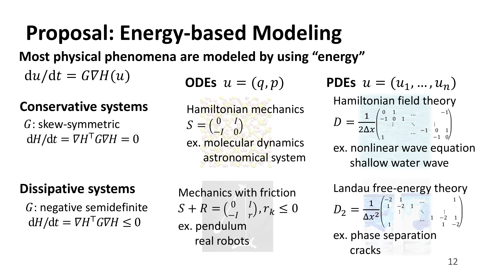 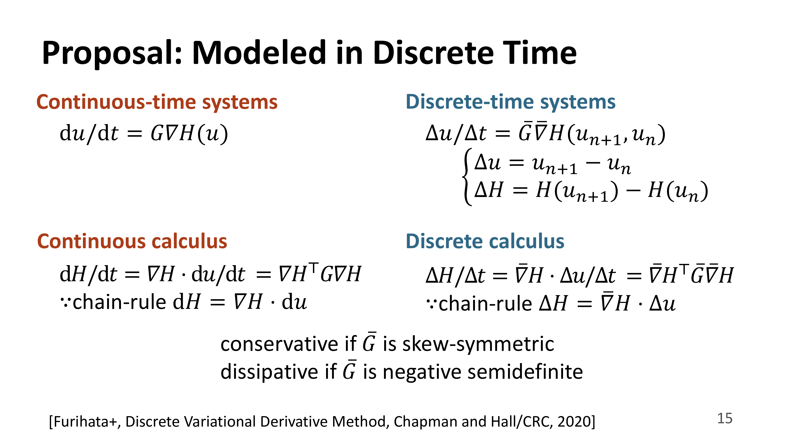 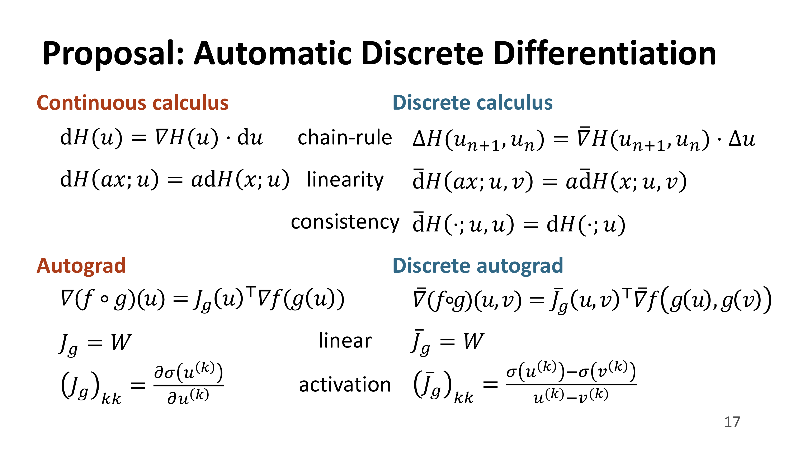 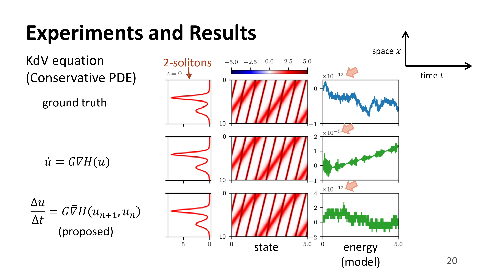 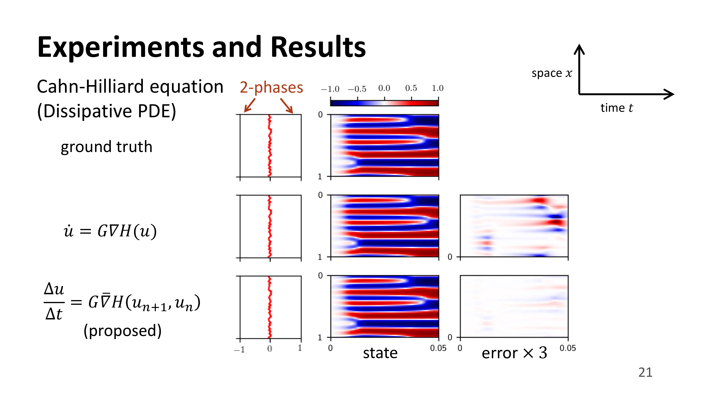 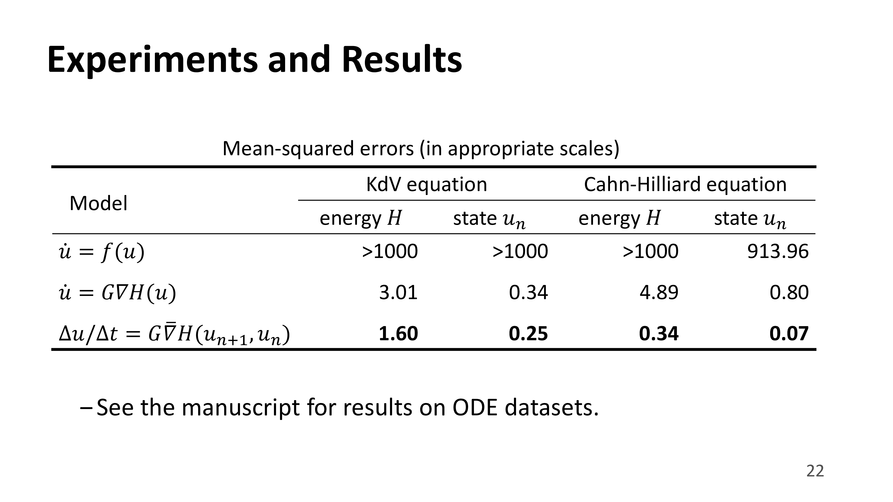
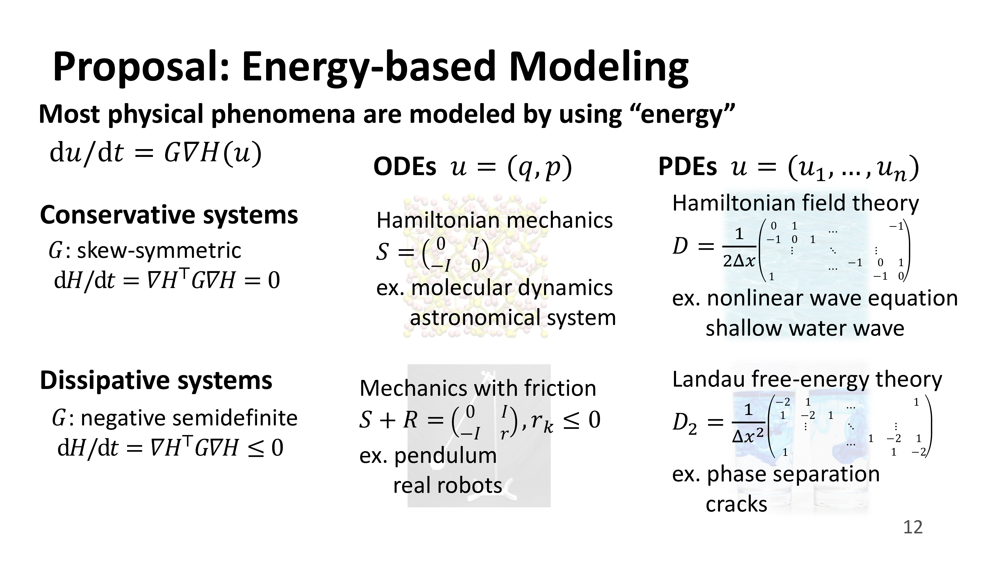 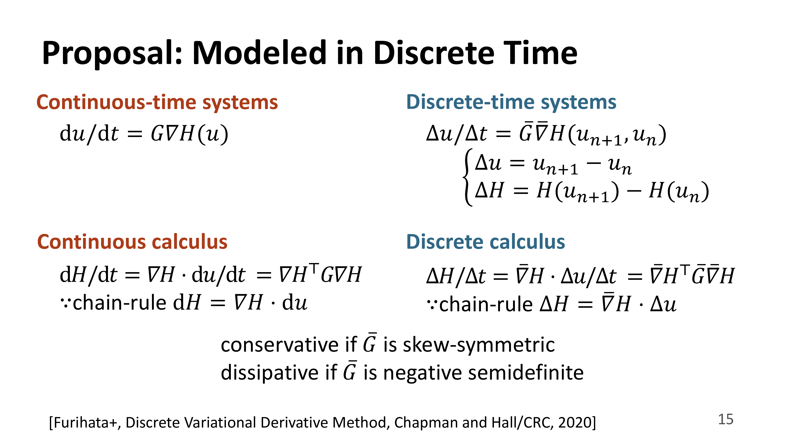 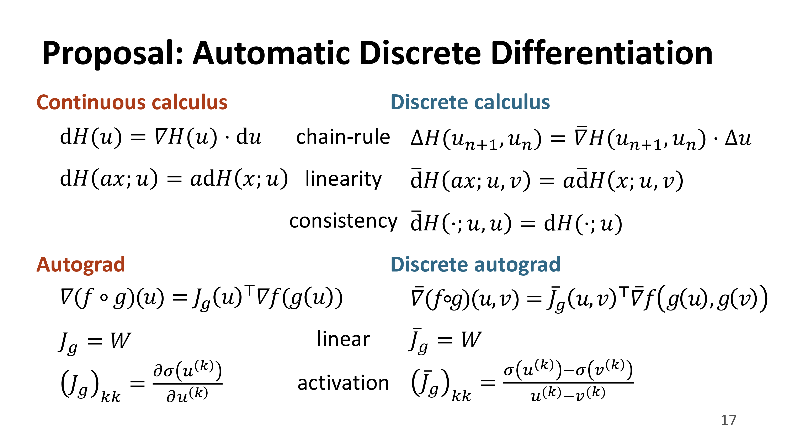 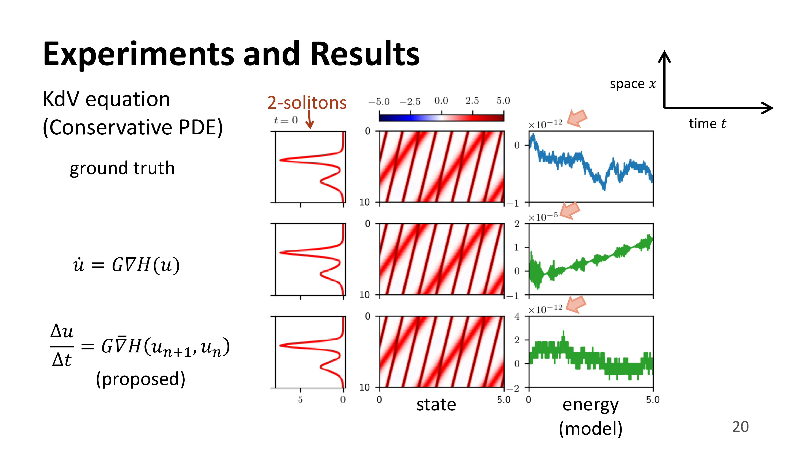 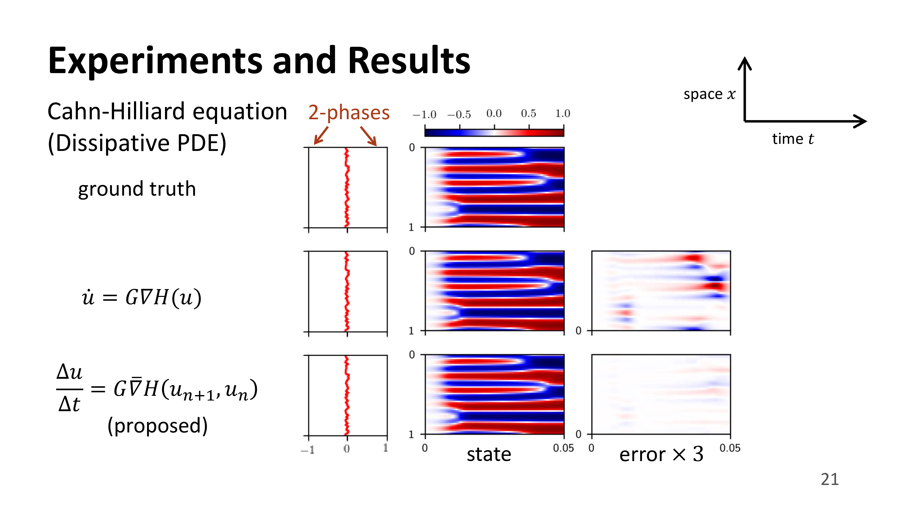 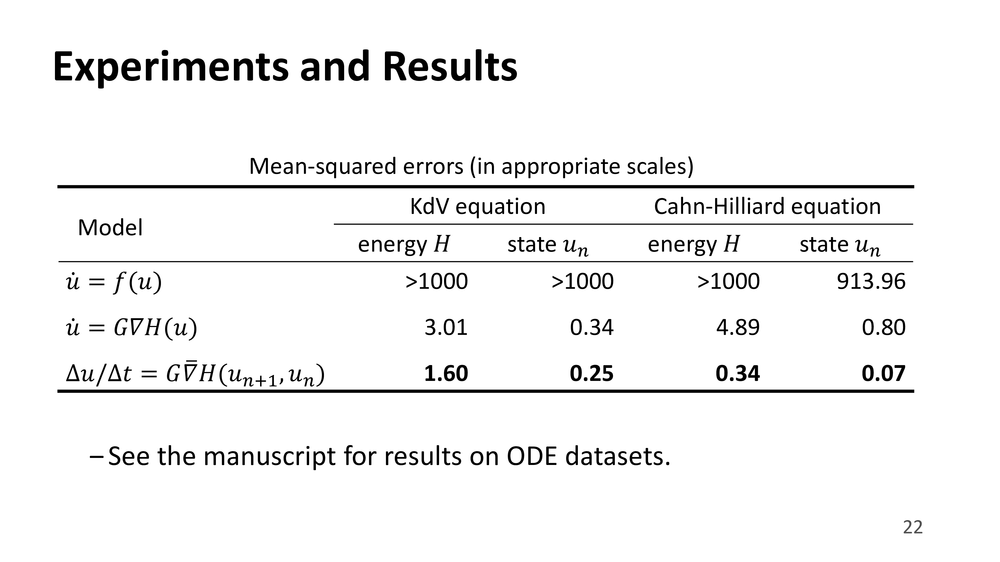